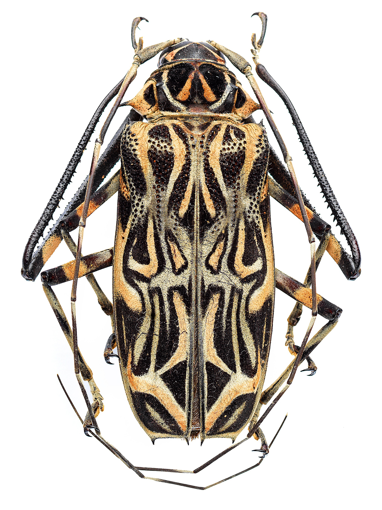

Beetles are a group of insects that form the order Coleoptera, in the superorder Endopterygota. Their front pair of wings are hardened into wing-cases, elytra, distinguishing them from most other insects. The Coleoptera, with about 400,000 species, is the largest of all orders, constituting almost 40% of described insects and 25% of all known animal life-forms; new species are discovered frequently. The largest of all families, the Curculionidae (weevils) with some 80,000 member species, belongs to this order. Found in almost every habitat except the sea and the polar regions, they interact with their ecosystems in several ways: beetles often feed on plants and fungi, break down animal and plant debris, and eat other invertebrates. Some species are serious agricultural pests, such as the Colorado potato beetle, while others such as Coccinellidae (ladybirds or ladybugs) eat aphids, scale insects, thrips, and other plant-sucking insects that damage crops.
Beetles typically have a particularly hard exoskeleton including the elytra, though some such as the rove beetles have very short elytra while blister beetles have softer elytra. The general anatomy of a beetle is quite uniform and typical of insects, although there are several examples of novelty, such as adaptations in water beetles which trap air bubbles under the elytra for use while diving. Beetles are endopterygotes, which means that they undergo complete metamorphosis, with a series of conspicuous and relatively abrupt changes in body structure between hatching and becoming adult after a relatively immobile pupal stage. Some, such as stag beetles, have a marked sexual dimorphism, the males possessing enormously enlarged mandibles which they use to fight other males. Many beetles are aposematic, with bright colours and patterns warning of their toxicity, while others are harmless Batesian mimics of such insects. Many beetles, including those that live in sandy places, have effective camouflage.
Beetles are prominent in human culture, from the sacred scarabs of ancient Egypt to beetlewing art and use as pets or fighting insects for entertainment and gambling. Many beetle groups are brightly and attractively coloured making them objects of collection and decorative displays. Over 300 species are used as food, mostly as larvae; species widely consumed include mealworms and rhinoceros beetle larvae. However, the major impact of beetles on human life is as agricultural, forestry, and horticultural pests. Serious pests include the boll weevil of cotton, the Colorado potato beetle, the coconut hispine beetle, and the mountain pine beetle. Most beetles, however, do not cause economic damage and many, such as the lady beetles and dung beetles are beneficial by helping to control insect pests.